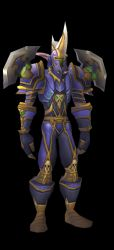

Joué par :
jordan Joué par :
[ Information masquée ] Age : 2500
Lieu de naisance : Wintersprings
Signe de naissance : Panda
Sexe : Homme
Race : Elfe
Faction : Alliance
Formation : Guerrier
Niveau : 60
Guilde : Artisanat 1 : Herboriste
Artisanat 2 : Alchimiste
Description : Senseyar est un ancien pirate qui lutte et qui luttera toujours au services de l'alliance en tant que soldat experimente.Actuellement Senseyar vit quelque part dans Feralas mais tout le monde c'est que sa vrai maison est le champ de bataille
"tu te met en travers de mon chemin c'est l'alliance que tu insulte donc meurt felon intrepide"
Cinquième Ère [3]
Lune de la Force
Décade du Panda
Décade du Gorille
Décade de l'Ours
Lune d'Agilité [1]
Décade du Tigre
Décade du Singe
Décade du Faucon [1]
Alterac l'affrontement avec le commandant Louis-Philipe
Le soleil se couche apres des heurres de combats sans avoir de vainqueurs j'emene avec moi quelques hommes pour recommencer l'assaut sur les troupes de Louis-Philipe mais tout d'un coup nous sommes encercle.Mes compagnos et moi sortons nos armes pret a combattre mais il est trop tard Louis-Philipe c'est deja jeter sur moi,je le regarde dans les yeux et je vois en lui la haine tout comme dans les miens,le chiens me blesses au flanc je suis mis au tapis par un puissant coup de masse provenant d'un tauren je m'en souvien plus.tout d'un coup Louis-Philipe s'approche et me dit "c'est la fin"[/u]je lui dir alors 'jamais" et je lui plantis ma lame dans les flancs avant de l'acheve il m'a dit "[i]VIVE LA HORDE" et d'un coup d'epee je l'achevit.
Lune de l'Esprit [2]
Décade de la Chouette [2]
la mort d'un ami
"La nuit est sombre la foret est silencieuse moi et ma monture avons suffisament erre en ces terres il est temps de mettre un terme a cette errance Jordansito nous attend a la porte de Stormwind mais il n'est pas seul il est accompagner d'une fille et de son fiere ami Enlil. Je m'approche mais je vois qu'il est en probleme une aura demoniaque s'eleve je ne vois rien,tout d'un coup l'ombre s'eleve,je tombe de ma monture et je ne voit que le neant.je me releve le corp de Jordansito est inerte qu'a -t-il fait pour meriter ca,mon ami,mon frere qu'as-tu fait pour merite un sort pareil?........."
La mort de Dritzz
"Je rentre dans la taverne de Goldshire pour me rafaraichir et je le vois lui!L'homme qui a tue mon ami mon frere Jordansito.Dritzz je crois qu'il s'appelait apres l'avoir vaincu je l'ai lentement fait souffert pour qu'il comprenne l'erreur qu'il avait commis j'ai sentis une satisfaction impressionante mais c'est alors que la meme fille que j'avais vu le soir de la mort de Jordansito c'est approche pour pleurer ce qu'il restait du corp de ce Dritzz et c'est la qu'elle m'a dit "nous venions juste de nous maries"je me suis sentis impuissant....Oh Elune qu'ai-je fais ne trouverais-je jamais la tranquilite que je cherche?
Décade de la Baleine
Décade du Lapin
Sixième Ère [2]
Lune de la Force [2]
Décade du Panda [2]
La retraite
"j'ouvre la porte de ma petite maison en Feralas comme d'habitude dans cette petit maison il n'y a que moi et personne d'autre je m'attendais a pouvoir revoir rien qu'une foi ce pauvre Jordansito ,Qu'Elune le garde lui et les autres membres de l'equipage qui ont refuse d'etre enrole dans l'arme,ils ont choisi la mort plutot que de se battre pour quelque chose qu'ils on juge "une cause perdue" j'espere au moin que les derniers membre survivants sauront quel chemin entrprendre Longue-vie a la voile sanglante et longue-vie a Lhana!!!!!!!!!!!"
Une nouvelle inquietante
Je me dirige comme tout les matins au bastion feathermoon en Feralas pour voir si j'ai du courrier et c'est la que l'aubergiste me dit qu'un courrier officiel venant de Darnassus m'est parvenu le courrier disait "J'ai connu Jordansito bien mieux que n'importe qui,viens me retrouver a Darnassus et tu comprendera pourquoi il est mort"je me suis empresse de prendre ma monture pour aller a Darnassus mais il n'y avait personne........je suis donc rentre a Feralas[ancre]